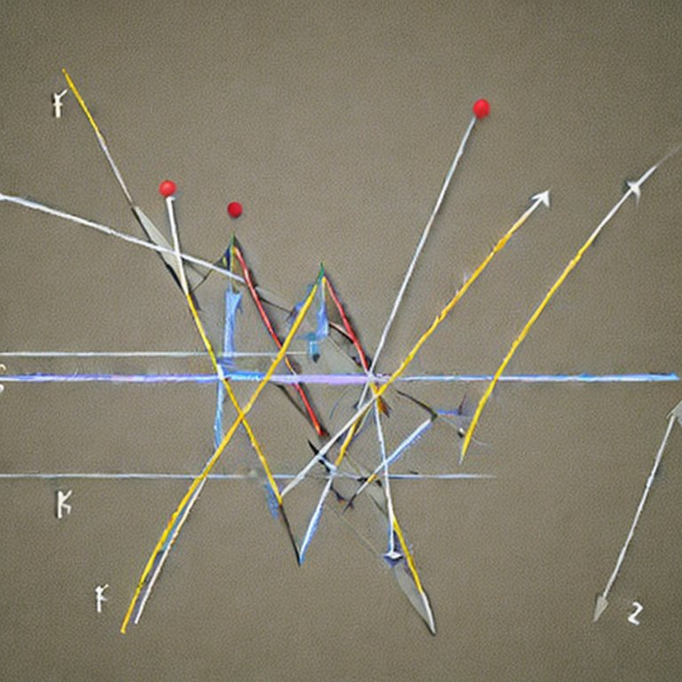

Data Causality Reference Library (dc_reflib)
This Data Causality reference library serves as the high-level documentation for training data sets to use in the computational exploration of causality. The datasets are available at
The data is available to use however you see fit. Every dataset has an associated “report” in this documentation. They are related by the dataset number. See the examples below.
Motivation
I have spent quite a bit of time creating algorithms meant to tease out the “causality” of some data-generating process. Development is often carried out with datasets for which the causality is unknown. In fact, that’s usually the entire point of creating a new algorithm. I have built up some testing datasets over the years that have known (or are known to not have) causal relationships. I figured putting that data someplace along with some references reports would help make future me’s life a little easier.
Examples
Make a local copy of all the data
- Clone the above
dc_reflibrepo - Use your favorite language to read the Parquet. There’s several options, e.g., using Apache Arrow. Let’s use Python for this example.
- Read the data:
import pandas as pd
import pyarrow as pa
df = pd.read_parquet('parquet_sets/bivariate/bivariate_0.parquet')- Do something fun with your new “cause-effect” dataframe.
That’s neat, but what’s the point of this documentation? That’s a good question. This example is trivial. You can also download each dataset individually; there’s no need to clone the dc_reflib repo. This documentation is not about reading the data. It is about the data.
The example uses dataset bivariate/bivariate_0.parquet. One series in named “cause” and the other is “effect”. The documentation for this dataset is found at
reports/bivariate/bivariate_0.html
Every dataset has a corresponding report in this documentation denoted by the dataset filename.
Q: I want to run the above example using dataset parquet_sets/bivariate/bivariate_63.parquet. Where is the data report?
A: At reports/bivariate/bivariate_63.html
Q: What about the report for dataset parquet_sets/bivariate/bivariate_33.parquet?
A: At reports/bivariate/bivariate_33.html
You get the point.
Data reports
Every data report includes the documentation that came from the original source, if available. Explanations of exactly what “cause” and “effect” are with respect to measurements units, the experimental procedure used to collect the data, and whatever other details I thought might be relevant. (Again, the quality of these details depends on what was available from the original data collection.)
There are some basic plots meant to help you see “at a glance” if there is a strong causal relationship illustrated by the data (in your opinion, I suppose). Descriptive statistics are also provided.
Finally, there’s a (very brief) discussion of what operational definition of causality I believe the data was originally intended to illustrate. Causality is a subtle and tricky business. There are datasets in dc_relib that are, in my opinion, not causal despite advertisements to the contrary. Literature links are occasionally provided in the discussions, but you are strongly encouraged to make your own conclusions about every dataset before you publish something.
More information
More details about dc_reflib and my opinions on causality can be found in About. That is where you will find discussions about licenses.
More data
More data is (almost) always a good thing. Discussion about other data causality collections can be found in Other Data Repos.
